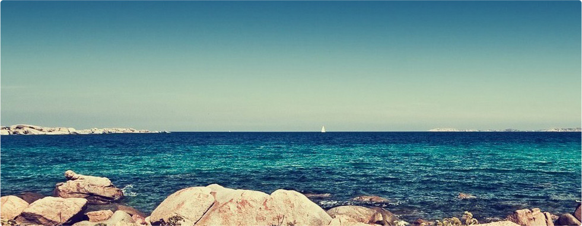
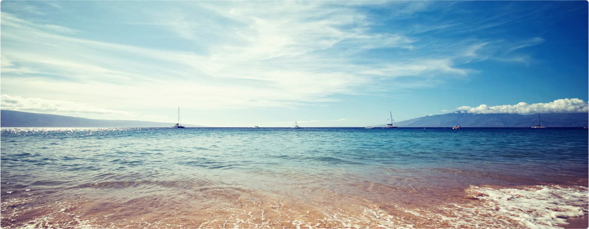

Преимущества пансионата «Лебедь»
Сегодня озеро Донузлав известно, прежде всего, как рай для виндсерфинга, кайтсерфинга и яхтинга. Однако примечательно оно и само по себе.
Благодаря пространственному расположению залива Донузлав и особенностям розы ветров в регионе достигается интенсивный водообмен между Чёрным морем и заливом Донузлав. Ветры с южной составляющей имеют средние скорости от 1 до 5 метров в секунду и большую повторяемость, чем ветры северных румбов, при этом для северных ветров характерны средние скорости до 6-8 метров в секунду. Часто наблюдалась резкая
смена направления ветра на 180 градусов в течение 0.5-1 часа.
На большей части акватории залива Донузлав солёность воды не отличается от морской воды в Чёрном море и составляет от 17,9 до 18,2%. В местах выхода подземных родниковых вод в заливе Донузлав, а ещё в результате весеннего таяния снега и паводка в заливе Донузлав образуются участки пресной воды. Все эти факторы положительно влияют на данные виды спорта.

Казантип
От пансионата 3 км.31 июля 2012 г. - 15 августа 2012 г. В августе 2012 года Казантип будет особым - Республика Z отпразднует двадцатилетний юбилей!
Юбилейный Казантип Z приглашает окунуться в мир свободы от предрассудок, в мир замечательной музыки, в мир красивых девушек и теплого крымского моря. Место встречи неизменно - пляж Поповки под Евпаторией. В этом году на пляжах Поповки ожидается что-то особенно необычное, яркое и фантастическое, ведь Республике Z исполняется 20 лет!
На этот раз Казантип будет почти в два раза короче, а значит программа окажется намного более насыщенной. Как поясняют организаторы,
таким образом участникам не предется стоять перед выбором "открытие" или "закрытие", когда можно пережить все от начала до конца.
